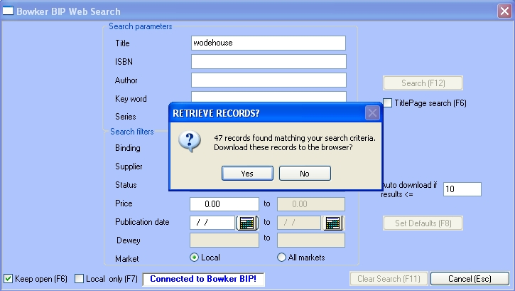
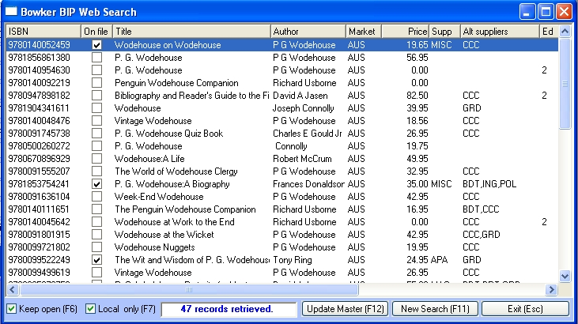
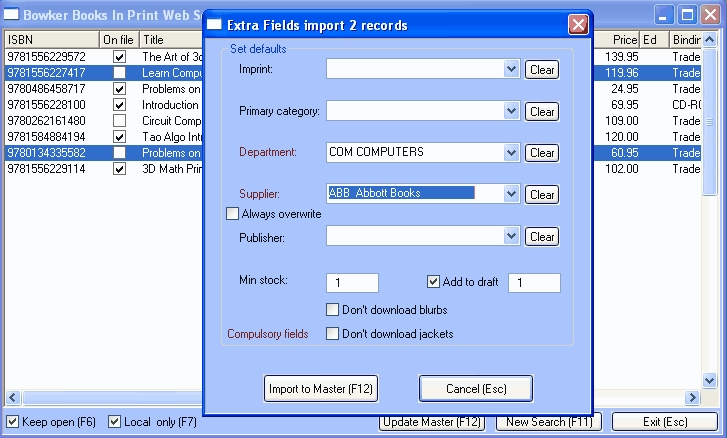

Bookscan contains two Bowker Books in Print web search:
Bowker Books in print
This is the standard search engine Bowker subscribers will use. It allows users to download on the fly, title details from the Bowker's web site using a varirty of search criteria: ISBN, title, author, series and keyword with additional filters of binding, publication date, supplier, status, market and price.
Bowker web services
his allows users to download on the fly, title details from the Bowker's web site using up to threef search criteria: ISBN, title and author.
Note: You will need a subscription to Bowker Books in Print to use these services.
Setting up
System Options
To set Bookscan up to use this feature, open the Titles tab of System Options, click on the Set Up button for Bowker BIP and enter your Bowker on line login code and password.
Binding and Status mapping
You should map your statuses and bindings to Bowker's.
From the main, open the Bindings and Status tables: Tables/ Authority tables/ Bindings and Tables/ Authority tables/ Status.
Open the edit window on each line and select the related Bowker mapping from the drop-down box. This will take about 5 minutes.
Using Bowker Books in Print
The search is activated:
| · | Via the Title Find window for title master searches.
|
| · | After an unsuccessful ISBN search in the Title Find window, the program will offer to do a web search to look for the title.
|
| · | Via the Details tab of the Title master (click on the Web (F9) button).
|
| · | Via the Receiving window – scan the barcode of a title not in the database and the program will offer to search the web site for the title.
|
| · | Via EDI receiving – titles not in the master file display "Not in the master file" in the browser. Select one of these titles, open the context menu and select "Add ISBN" to search the web for the title.
|
When the search is activated, the Web Search window is displayed:

In the example above, the user has created a title search for 'wodehouse'. The search has found 47 titles.
Creating your search criteria:
| · | Enter the search data in the relevant fields (e.g. the title, "South Pacific").
|
| · | Click the Search (F12) button to do your search. Bookscan will contact the Bowker Books In Print web site and begin loading a browser with the results of your search.
|
| · | Title (and other text) searches are embedded. The example above will find any title with "South Pacific" anywhere in its title field.
|
| · | Bookscan will prompt you if many titles meet your search criteria (if you get 2000 hits, you may wish to backtrack and add extra criteria); otherwise it will just begin downloading. You may set your own prompt level in the window – the default is 20.
|
Search results

| · | As the results are downloaded you will see them added to the results browser.
|
| · | You can click the Cancel button, or press the Escape key, at any time to cancel the download. So you can watch for the title you require and after it appears in the browser, press the Escape key and the download will stop.
|
| · | After downloading, if you have too many titles in the browser, you can click the Show Search (F11) button to edit the search and re-do the download.
|
| · | In the browser, the second column, On File, shows whether you already have the title in your master file. Selecting such a title in the browser will cause the title master to display that title.
|
| · | You can filter the results browser to just show items with local pricing by using the "Local Only (F7)" check box.
|
| · | Set the "Keep Open (F6) checkbox to true if you want to download multiple titles, otherwise the search window will automatically close when you down load a title or group of titles.
|
| · | Note that the search window is not modal to the Title master; so you can switch back and forth between the two windows.
|
Single title import
In the Results browser, highlight the title you wish to import and click the "Update Master (F12)" button. Or just double click on the title in the browser. The title will be added to the browser. You can then return to the title master window and edit the departments and other fields you want.
Alternatively you can set the program to display the Extra Fields window (see 'multiple title import' below), where you can set the Department and other fields before importing. This flag is set in the Web Search Defaults window (se below).
If the "Keep Open (F6) checkbox is ticked search window will remain open after you have added a title, allowing you add multiple titles. If it is unticked, the window will automatically close.
Multiple title import
You can import multiple titles to the master file by highlighting all the titles you wish to import and click the "Update Master (F12)" button. The Extra Fields window will open where you can select the department, supplier and a few other details.

You can set the minimum stock add the titles to the draft..
Setting web search defaults
The Web Search Defaults window can be opened from the Web Search window by clicking on the Set Defaults (F8) button. If you have already started your search and the search results are showing you can open the window using the context menu.

You can set the following:
| · | Don't download jacket images.
|
| · | Don't download blurbs.
|
| · | Set a default department (useful when updating by double clicking in the browser).
|
| · | Set a MISC as the default supplier (useful when updating by double clicking in the browser).
|
| · | Always show the fields selection ('Extra Fields') window for single title downloads.
|
| · | If you have a TitlePage account, you can have the program go to the title page site to get the price and availability data.
|